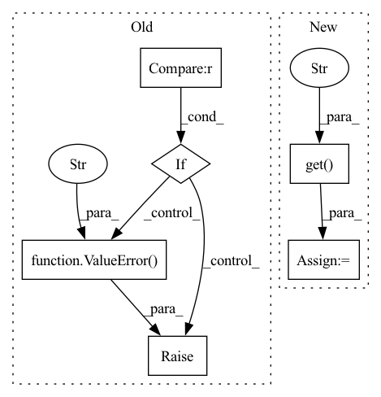

Pattern ID :14267
Before Change
access_token = ernie_bot_access_token or os.environ.get("ernie_bot_access_token", None)
if access_token is None :
raise ValueError(
"Did not find `ernie_bot_access_token`, please add an environment variable `ernie_bot_access_token` which contains it, or pass"
" `ernie_bot_access_token` as a named parameter."
)
self.url = f"https://aip.baidubce.com/rpc/2.0/ai_custom/v1/wenxinworkshop/chat/completions?access_token={access_token}"
def run(self, query, history=None, stream=False):
After Change
:param secret_key: secret_key for applying token to request wenxin api.
api_key = api_key or os.environ.get("ERNIE_BOT_API_KEY", None)
secret_key = secret_key or os.environ.get("ERNIE_BOT_SECRET_KEY" , None)
if api_key is None or secret_key is None:
raise Exception(
"Please apply api_key and secret_key from https://cloud.baidu.com/doc/WENXINWORKSHOP/s/flfmc9do2"
)In pattern: SUPERPATTERN
Frequency: 3
Non-data size: 6
Instances Fragment ID: 47294625
Project Name: paddlepaddle/paddlenlp
Commit Name: 7d48f0eba89056cebbe3d3745f40112c0e9ac638
Time: 2023-04-20
Author: w5688414@gmail.com
File Name: pipelines/pipelines/nodes/llm/ernie_bot.py
M Class Name: ErnieBot
N Class Name: ErnieBot
M Method Name: __init__(3)
N Method Name: __init__(2)
M Parent Class: BaseComponent
N Parent Class: BaseComponent
M File Name: pipelines/pipelines/nodes/llm/ernie_bot.py
N File Name: pipelines/pipelines/nodes/llm/ernie_bot.py
M Start Line: 45
M End Line: 51
N Start Line: 34
N End Line: 49
Before Change
// actions
actions = kwargs.get("actions", [None] * (input_length + pred_length))
if self.action_conditional:
if actions is None or actions[0] == None or actions.shape[-1] != self.action_size :
raise ValueError("Given actions are None or of the wrong size!" )
if type(actions) == torch.Tensor:
actions = actions.transpose(0, 1) // [T_in+pred, b, ...]
for t in range(pred_length):After Change
// actions
b, input_length, _, _, _ = x.shape
empty_actions = torch.zeros(b, input_length + pred_length, device=self.device)
actions = kwargs.get("actions" , empty_actions)
for t in range(pred_length):
pred = self.pred_1(x, actions=actions) Fragment ID: 47294624
Project Name: ais-bonn/vp-suite
Commit Name: d2c8cad7d7c2488018a286b7ca7224fda8eb73eb
Time: 2022-01-18
Author: boltres@ais.uni-bonn.de
File Name: vp_suite/models/unet3d.py
M Class Name: UNet3D
N Class Name: UNet3D
M Method Name: forward(3)
N Method Name: forward(3)
M Parent Class: VideoPredictionModel
N Parent Class: VideoPredictionModel
M File Name: vp_suite/models/unet3d.py
N File Name: vp_suite/models/unet3d.py
M Start Line: 75
M End Line: 98
N Start Line: 78
N End Line: 90
Before Change
def forward(self, x, pred_frames: int = 1, **kwargs):
mask_true = kwargs.get("mask_true", None)
if mask_true is None :
raise ValueError(f"forward method for model {self.NAME} needs kwarg "mask_true"!" )
b, total_frames = x.shape[:2] // NOTE: x NEEDS TO HAVE "TOTAL_FRAMES" FRAMES!
input_frames = total_frames - pred_frames
After Change
def forward(self, x, pred_frames: int = 1, **kwargs):
b, total_frames = x.shape[:2] // NOTE: x NEEDS TO HAVE "TOTAL_FRAMES" FRAMES!
context_frames = total_frames - pred_frames
train = kwargs.get("train" , False)
mask_true = self._scheduled_sampling(b, context_frames, pred_frames, train)
x_patch = self._reshape_patch(x) // [b, t, cpp, h_, w_]
next_frames = [] Fragment ID: 47294620
Project Name: ais-bonn/vp-suite
Commit Name: 4c61bdc6595f9ce7e08aede1c0859bfbb0bc72d8
Time: 2022-02-07
Author: boltres@ais.uni-bonn.de
File Name: vp_suite/models/predrnn/predrnn_v2.py
M Class Name: PredRNN_V2
N Class Name: PredRNN_V2
M Method Name: forward(3)
N Method Name: forward(3)
M Parent Class: VideoPredictionModel
N Parent Class: VideoPredictionModel
M File Name: vp_suite/models/predrnn/predrnn_v2.py
N File Name: vp_suite/models/predrnn/predrnn_v2.py
M Start Line: 73
M End Line: 77
N Start Line: 72
N End Line: 74